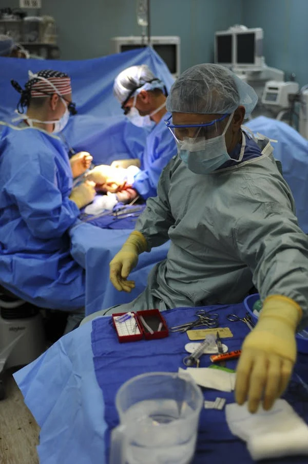

We offer opportunities in the following fields
CLICK HERE FOR JOBS INFO
As any other Institution, Euro Generation offers opportunities to people who have trained in specific Fields as shown below.
We are targeting on People who already have profession with Diplomas, Degrees, Doctorate or PhD in the following fields:
- Nursing Electricians
- IT
- Mechanic/Mechatronics
- Plumbers
- Carpenters
- Bus/Truck-drivers (from recognized institutions with Diploma should be KNEC Diploma)
- Also people who are still training in the mentioned fields could register to learn the language parallel.

NURSING PROFESSIONALS
Nursing is a very Fast-Growing Field, there are about 20 Nursing Specialties, we are recruting Nurses who have done or doing Diplom, Degree, Masters or PhD
CRAFT PROFESSIONALS
We are recruiting Welders who have a diploma, Bachelor, Master degree or higher Level in all types and Fields of welding example Diploma and Degree
GREENJOBS PROFESSIONALS
Electricians with (from recognised institutions with Diploma should be KNEC Diploma), also people who are still training in the mentioned fields could register to learn the language parallel.
ENGINEER PROFESSIONALS
Carpenters with (from recognised institutions with Diploma should be KNEC Diploma), also people who are still training in the mentioned fields could register to learn the language parallel.PHYSICIANS
Plumbers with (from recognised institutions with Diploma should be KNEC Diploma), also people who are still training in the mentioned fields could register to learn the language parallel.
TRUCK/BUS DRIVERS
Truck-drivers with (from recognised driving school in Kenya with clean driving record, also people who are still training in the mentioned field could register to learn the language parallel.)Green jobs can be found in all sectors of the economy, ranging from traditional areas such as manufacturing, and transport and buildings, to nascent opportunities for employment in areas such as the energy sector. To put it in a nutshell: green jobs are the basis for a successful energy transition, and promote climate and environmental protection.
People who have a technical or engineering qualification and those with a link to the manufacturing and construction industries are particularly in demand in the green economy. These professions include:
- Craftspeople (e.g. electronics technicians for energy and building services, heating engineers, plant mechanics - sanitary, heating and air-conditioning technology)
- Engineers (e.g. energy consultants, environmental engineers, design engineers / developers, automotive engineers)
- IT specialists (e.g. software developers, data scientists) From the following economic sectors:
- Energy and electrical engineering (e.g. wind power, photovoltaics)
- Mechanical engineering
- Technical equipment and installations
- Construction industry
- Automotive industry (e.g. electric mobility)
- Agriculture and farming